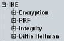
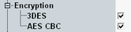
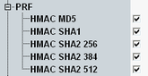
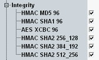
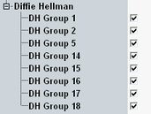

This section is related to the IPsec protocol internet key exchange version 2 (IKEv2). It is used for authentication before setup of an IPsec tunnel.

All enabled values are supported by the ePDG. The value to be used is negotiated with the DUT.
In each section, at least one value supported by your DUT must be enabled. Otherwise, authentication fails.
To use Wireshark for connections with IPsec, see "Configuring Wireshark for IPsec".
The listed values are specified in RFC 7296. That RFC references other RFCs indicated in the following in brackets.
Selects the encryption algorithms supported by the ePDG.

Selects the pseudorandom functions supported by the ePDG.

Selects the integrity protection algorithms supported by the ePDG.

Selects the Diffie-Hellman groups supported by the ePDG.

- "DH_GROUP_1": 768-bit MODP
- "DH_GROUP_2": 1024-bit MODP
- "DH_GROUP_5": 1536-bit MODP
- "DH_GROUP_14": 2048-bit MODP
- "DH_GROUP_15": 3072-bit MODP
- "DH_GROUP_16": 4096-bit MODP
- "DH_GROUP_17": 6144-bit MODP
- "DH_GROUP_18": 8192-bit MODP